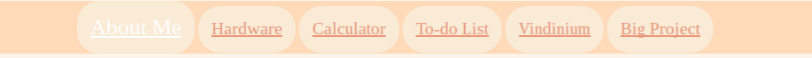

First create a navbar by putting links with:
<li> <a href=”insert link”> Text you want the link to appear as</li>
I simply linked my first button in my navbar to the current page I was working
on and called it About Me and added other buttons (hardware, calculator, to-do list,
vindinium, big project) put a # in place of the links I didn’t yet have. Next I created
a
separate style page and linked it back to the original page with <link rel="stylesheet" href="mainstyle.css"> </li>
on the head of the original page and then one the style page I created a
#navbar {
}
To add my background color to the navbar, use the code background-color: PeachPuff;
then to center the links use text-align: center; between the brackets of the navbar hashtag.
Next, I lined up the links next to each other. So in the style page, make:
#navbar li {
}
And add to in between the brackets: display: inline-block; to make the links line up. Then
change the font size to 20 pixels with font-size; 20px; put that between the brackets as well.
To space out the buttons, add between the brackets padding: 15px; Then add a background color
for the buttons, I used between the brackets background-color: antiquewhite; and to round out the buttons
I added between the brackets border-radius: 25px. To change the color of the links, use
a:link { color: darksalmon; } and a:visited { color: darksalmon; }
Having the links change color and grow when hovered over can be used with
a:hover { font-size:25px;color: white;} and a{color: darksalmon; font-size: 20px; -webkit-transition: all 1s linear; }
By now, it should look like this while your cursor hovers over the about me page.

Now click away from the style page back to your original page and create a table like this
<table style="width:50%">
<tr>
<th>ABOUT THE CREATOR</th>
</tr>
<tr>
<td> Insert description. </td>
</tr>
</table>
To keep the paragraphs in a section instead of all the way across the page, make sure the table width is 50%. Next I added a break <br> and created a second table
<th>LIKES</th>
</tr>
<tr>
<td> Brianna has many likes but two examples of these are Lolita/Kawaii Fashion and crafting </td>
</tr>
<tr>
<td>Lolita, Kawaii, etc Fashion (or whatever you want):</td>
</tr>
<td>Insert description
</td>
<td> <img src="Insert image link relating to likes" alt="Whatever" style="width:200px"></td>
<tr>
<td>Crafting (or whatever you want)</td>
</tr>
<tr>
<td>Insert description
</td>
<td> <img src="Insert image link relating to likes" alt="whatever" width="200x"> </td>
</tr>
</table>
Separated it with a break and then a third table
<table style="width:50%">
<tr>
<th>MAIN HOBBY: DRAWING(or whatever you want)</th>
</tr>
<tr>
<td> Insert description
</td>
<td> <img src="image link" alt="whatever" style="width:200;"> </td>
</tr>
</table>
This way your images will be next to your paragraphs. To change the color and format of texts in this page,
go back to your style page and create a class such as these:
.slant-text {
font-style: italic;
}
.darksalmon {
color: darksalmon;
}
.gray-text {
color: gray;
}
These were the classes I used. Then insert in the table header the class like this:
<th class=”darksalmon”>ABOUT THE CREATOR</th>. Insert the “darksalmon” class in your
other table headers. Plus add this class as well as the “slant-text” class
to <td>Lolita, Kawaii, etc Fashion (or whatever you want):</td> and <td>Crafting (or whatever you want)</td>.
Then add the “gray-text” class to the descriptions in the table. Now your About Me page is
finished and should look very similar to mine aside from the background color and the cursor.
Add a style tag in the head of the page and insert a “body”css. Then add your background color
and custom cursor like this
<style>
body {
background:#fcf4e8;
cursor:url(image used for custom cursor), auto
}
</style>
Now your About Me page is completely finished.
Next create a new page and insert the link to your new page in your navbar and name it Hardware.
Copy and paste your entire head and navbar onto your new page. Make sure to save when copy
and pasting big chunks of text. Then make a div with <div></div> and in between these
tags, create the header for your page using <h1> Hardware of the Computer/Your title</h1> and add
the “darksalmon” class. Then add an image of a motherboard as the first term for your hardware page,
then add a break and type out “Motherboard”. To make it more distinguishable from the definition, put
the word between <font size=”5”> <font> and add the “darksalmon” and “slant-text” classes to that.
Put in another break and between <p> </p> tag add your definition of motherboard. Then put a break.
Repeat this with the rest of your hardware parts. Then go back to your style page and create
a “div”css and center your paragraphs in your hardware page like this
div {
margin: auto;
width: 50%;
padding:10px;
text-align: center;
}
I had tried using a table to keep the text in a section rather than having it spread across the entire
page. However, it wouldn’t center how I wanted it to so I used a div instead.Once that is done, you are
done with your hardware page.